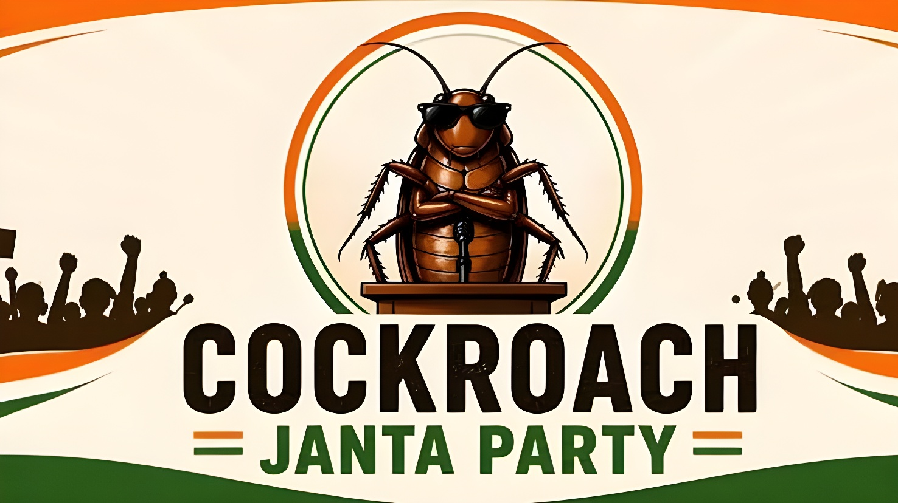

Une moquerie d'un haut magistrat, comparant la jeunesse indienne désœuvrée à des « cafards », a suffi à faire naître en quelques heures le Cockroach Janta Party. Un mois plus tard, ce mouvement satirique né sur Instagram a rassemblé plus de 22 millions d'abonnés, organisé des manifestations dans une demi-douzaine de villes indiennes et mis sous pression le gouvernement de Narendra Modi sur la question des fuites d'examens et du chômage des jeunes.
Le 15 mai 2026, lors d'une audience consacrée à l'usage de faux diplômes par certains avocats, le juge en chef de l'Inde, Surya Kant, lâche une remarque qui va embraser les réseaux sociaux : il compare une partie de la jeunesse indienne sans emploi à des « cafards » et des « parasites de la société », des jeunes qui, faute de travail, « s'agitent dans les médias, sur les réseaux sociaux, jouent les lanceurs d'alerte ou les activistes, et s'en prennent à tout le monde ». Le magistrat tentera ensuite de nuancer ses propos en précisant qu'il visait seulement les détenteurs de diplômes falsifiés, mais le mal est déjà fait.
Dès le lendemain, Abhijeet Dipke, un Indien de 30 ans alors étudiant à Boston et passé par la communication politique du Aam Aadmi Party (AAP), lance sur X un appel resté célèbre : « Et si tous les cafards s'unissaient ? ». Il annonce la création du Cockroach Janta Party (CJP), littéralement le « Parti du peuple des cafards » — un nom qui parodie ouvertement le Bharatiya Janata Party (BJP), la formation nationaliste hindoue de Narendra Modi, au pouvoir depuis 2014. Les critères d'adhésion affichés sur le site du parti donnent le ton de cette satire : être « chômeur, paresseux, connecté en permanence et capable de râler de manière professionnelle ».
Derrière la blague, une réalité sociale explosive. Selon les données officielles, le taux de chômage des 15-29 ans atteignait 9,9 % en 2025 à l'échelle nationale, grimpant à 13,6 % dans les zones urbaines ; chez les jeunes diplômés, ce taux frôlerait les 40 %. Cette frustration a été récemment exacerbée par une série de scandales de fuites de sujets lors de grands concours nationaux. En mai 2026, l'examen médical national NEET — que plus de deux millions de candidats se disputent pour environ 130 000 places — a été annulé in extremis pour soupçons de fraude et de fuite, ce qui a provoqué une vague de désespoir chez les candidats, certains en étant venus au suicide selon plusieurs médias indiens. L'examen a depuis été reprogrammé.
C'est dans ce contexte que le CJP s'est imposé comme un défouloir inattendu pour une génération qui se sent méprisée par ses dirigeants. Pour son fondateur, qui s'est confié à Al Jazeera, le diagnostic est limpide : les autorités traitent les citoyens comme des parasites, en oubliant que les cafards prolifèrent justement dans la pourriture — une métaphore qu'il juge fidèle à l'état de l'Inde actuelle.
Propos du juge Surya Kant à la Cour suprême ; création du Cockroach Janta Party par Abhijeet Dipke dès le lendemain.
Plus de 350 000 adhésions revendiquées en quelques jours et plusieurs millions d'abonnés sur Instagram ; le compte X du mouvement est bloqué en Inde, puis recréé.
Premier rassemblement public à Jantar Mantar, à New Delhi. Moins de 2 000 personnes sur place ; Dipke, victime d'un coup de chaleur, donne un ultimatum de sept jours au ministre de l'Éducation Dharmendra Pradhan.
Deuxième rassemblement à Pune (Maharashtra), où le CJP présente son « manifeste des examens ». D'autres rassemblements suivent à Amritsar, Bengaluru et Hyderabad.
Abhijeet Dipke est giflé à plusieurs reprises par des inconnus lors d'un rassemblement à Jaipur ; il dénonce une tentative d'intimidation et appelle à poursuivre la mobilisation pacifiquement.
Au-delà de l'ironie mordante, le CJP a structuré ses revendications. Présenté lors du rassemblement de Pune, son « manifeste des examens » réclame une compensation de 10 000 roupies par candidat en cas de fuite de sujets, un processus de passation transparent, la possibilité d'une réévaluation physique des copies, ainsi qu'un audit indépendant des contrats publics confiés à des organismes privés pour l'organisation des concours. Plus largement, le mouvement revendique aussi l'interdiction de nommer d'anciens juges à la chambre haute du Parlement en guise de récompense de fin de carrière, un gel de vingt ans pour les élus changeant de parti, et la réservation de 50 % des sièges parlementaires et postes ministériels aux femmes.
Sa cible immédiate reste cependant la démission du ministre fédéral de l'Éducation, Dharmendra Pradhan, jugé responsable de l'incapacité du gouvernement à endiguer les fuites d'examens à répétition. Une pétition en ligne réclamant son limogeage a recueilli plus de 800 000 signatures. Le porte-parole du parti, le journaliste Saurav Das, a indiqué que des représentants du CJP comptaient rencontrer des parlementaires de différents partis pour porter ce « manifeste » lors de la prochaine session parlementaire de mousson.
« Et si tous les cafards s'unissaient ? »
— Abhijeet Dipke, fondateur du Cockroach Janta Party, sur X, 16 mai 2026Face à l'ampleur inattendue du phénomène, les autorités ont d'abord réagi par la censure : le compte X du mouvement a été bloqué sur le territoire indien, les services de renseignement invoquant un risque pour la sécurité et la souveraineté du pays. Un compte de remplacement, « Cockroach is Back », a immédiatement vu le jour, fédérant près de 150 000 abonnés en quelques heures. Sur Instagram, la page du CJP a rapidement dépassé les 22 millions d'abonnés, surclassant celle du parti présidentiel du BJP. Le 13 juin, sans citer directement le mouvement, Narendra Modi a affirmé sur X que son gouvernement œuvrait pour un « développement porté par la jeunesse » — une déclaration jugée hypocrite par le porte-parole du CJP, qui a rappelé le silence du Premier ministre sur les suicides d'étudiants et les fuites d'examens.
Plusieurs observateurs restent toutefois prudents sur la portée réelle du mouvement. L'éditorialiste et ancien responsable de l'AAP Ashutosh estime que le fait même que le gouvernement laisse les rassemblements se dérouler suggère qu'il n'y voit pas de menace sérieuse, faute de relais parmi les figures établies de la société civile. Le principal parti d'opposition, le Congrès national indien, observe lui aussi le phénomène avec un mélange de prudence et d'agacement, n'étant pas parvenu à canaliser à son profit cette colère pourtant massive de la jeunesse.
| Acteur | Position / enjeu | Élément clé |
|---|---|---|
| CJP | Mobiliser la jeunesse sans structure partisane | 22 M abonnés Instagram |
| Gouvernement Modi (BJP) | Minimiser la portée du mouvement | Compte X du CJP bloqué puis recréé |
| Ministre D. Pradhan | Sous pression sur les fuites d'examens | 800 000+ signatures pour sa démission |
| Congrès (opposition) | Peine à capter l'élan de la jeunesse | Pas de soutien officiel affiché |
| Société civile / étudiants | Relais locaux dans plusieurs villes | Rassemblements à Delhi, Pune, Jaipur... |
Le Cockroach Janta Party n'est pas un parti enregistré auprès de la Commission électorale indienne et ne se présente à aucune élection. Sa force réside ailleurs : avoir transformé une insulte en étendard et donné une voix à une classe d'âge — la moitié des 1,4 milliard d'Indiens a moins de 25 ans — qui se reconnaît rarement dans l'offre politique traditionnelle. Pour de nombreux commentateurs, le CJP agit moins comme une menace électorale immédiate pour Narendra Modi que comme un thermomètre social, révélant l'ampleur du malaise d'une génération confrontée au chômage et à la défiance envers les institutions. Reste à savoir si cette énergie virale, jusqu'ici davantage portée par les écrans que par les foules, parviendra à se traduire en un rapport de force politique durable.